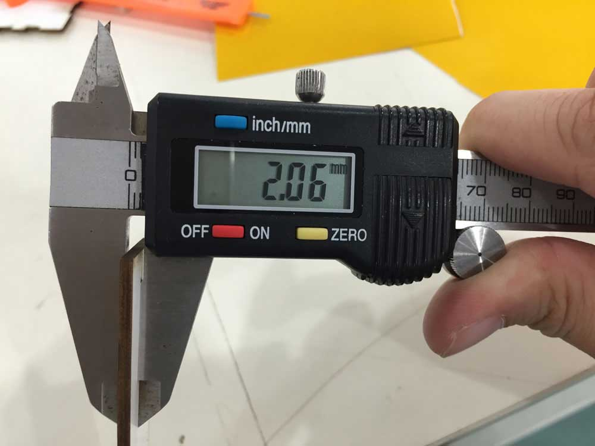
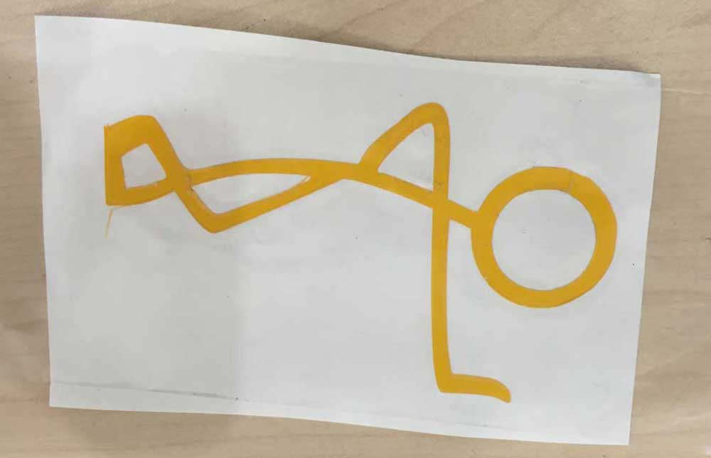

Exercise 03 Computer-controlled Cutting
Requirement
- Design, make, and document a press-fit construction kit.
- Design and print something from a vinyl cutter.
Press-Fit Construction Kit
I walked into this week's requirement with some anxiety because I am quite weak in designing, and I find it challenging to visualize 3D objects from 2D diagram. The whole of Thursday was spent looking through tutorials such as this and this. I also looked at other peoples' works for inspirations, such as the following:
I finally decided to make a tissue box as I have packs of tissue sitting at home, and a tissue box would come in handy to store an opened pack. Then I came across a Box Maker website. Simply input the dimensions and material thickness and viola, I can receive my template in PDF. What more can I ask?! I could have finish this week's assignment in a flash! But in this way, I don't learn anything. I quickly abandoned the idea and confronted the subject matter head-on because the learning journey, though rocky, is more important than the end-product.
I have difficulty visualizing a 3D object to design on a 2D platform. My brain just cannot process the information, so I need to physically construct a model to know where to cut, where not to cut etc. I took some scrap materials to build the following model after taking measurement from my tissue pack.
Another problem was using Inkscape to create the template. I didn't think it was that difficult to create the jagged edges of the joints. At first, I made all the edges have the same orientation, and only realised I have to offset the edges of the receiving face so they can fit each other.
According to this guide, my edges should be clones, and not clone of clones, or clone of clone of clones. Midway, I got confused which objects were linked to the original, and which were not, because they all look the same. So I had to start all over.
Then after I got that sorted out, I was not able to "subtract" the cloned "edges" to the board. I spent the whole of Friday and Saturday just doing the template. The error I received was "one of the objects is not a path". It seems that somehow I need to make the object become a path, and not group or anything else. Someone gave a comment (Comment No. 13) on this issue on this page: "When you click to select the imported svg, the infobar at the bottom of the screen should read “path” (not group or ellipse or rectangle or clipped path or anything else). If it doesn’t you will need to ungroup, release clips, path> object to path or whatever is indicated until it says only path. Once it is a path, the rest of the process should work properly."Adobe Illustrator
After spending a good amount of time in Inkscape trying to sort out how to subtract 2 objects, I have decided to put it aside, and use Adobe Illustrator instead to work on my template. And I was glad that I was able to get the result I want, or so I thought.
The dimensions are 165mm x 120mm x 40mm.
Material thickness is 2mm.
- Draw the shapes with the rectangle tool.
- Select the object and set weight of the stroke to 2mm. Alighn stroke to outside. Check on Dashed Line. Input 10mm for dash, and 10.2mm for gap. This is to compensate the laser kerf.
- To make the edges editable, select the rectangle, go to Object > Expand Appearance. Click Ok.
- Next, select the dashes, go to Object > Compound path > Release.
- Adjust the dashes to your desired placement.
- Select the dashes, and the layout and apply subtract tool.
Laser cutting Process
I have read up various sources, including this and this that it is important to take into consideration the kerf when planning to laser cut my design. In FabLab @ SP, we have some 2mm white cardboard, and some 3mm MDF boards. I would be using the 2mm white cardboard. First I took measurement of the thickness.

Because Steven has already done some cutting test using the same material to determine the speed and power to use, I would be referring to Steven's test cuts of 20mm x 20mm to input my settings. The lasercutters we use are the Epilog Fusion M2 40 and the EAS Laser Engraver.
I spent the whole of Monday at the fablab, testing out my template and trying out my design. I cut a total of 4 versions because I kept making mistakes. After each version, I would evaluate what went wrong, and how to do better the next time.
Version 1
Version 2
I went back to Illustrator to try work out my edges. One of my classmates recommended me to try Inkscape using the tabbed box maker extension which can be downloaded and added separately. The unzipped files saved in ~\Inkscape\share\extensions would appear in Inkscape under the tab Extensions > Laser Tools > Tabbed Box Maker. It seems like common sense, but when I used the extension to generate my template that I understood that the facing joints of each panel must look opposite, and I have to take note of the ending edges of the panels to ensure that they do not obstruct the joints.
Version 3
I know it was the kerf that I need to adjust, but I wasn't sure how to tweak it. This time, I lowered the amount and the result was the same. It was near the end of the day already, so I had to stop cutting. But that gave me time to think through where I could have gone wrong and how to rectify the problem.
Version 4
The next morning I decided to do a test print of various settings to find my best fit. I needed to test it out step by step, and not be in a hurry to cut the model.
Except for the top panel, all other sides were cut with a 0.3mm kerf setting. I've re-used the top panel of a previous cut (0.015mm) because I would expect the top panel to be opened and closed frequently to change the content, so it cannot be too tight. On hind side, I should have done the test print of the kerf I need right from the start. As different materials with different thickness will have a different kerf value, this is a caliberation that needed to be done right from the start, even before designing the slots or joints. Now that I know, I will be able to perform better next time.
Vinyl Cutter
The vinyl cutter I used was the Roland GS-24. The process is as follows:
- Search for a design, clean up and import to Inkscape.
- Convert to vector using Trace bitmap, save to svg and import to Cut-studio or Corel Draw or whatever software the cutter uses.
- Make sure the lines are not too fine as that might become a problem during cutting and transferring. Change the image to outline.
- Feed vinyl and get measurement from machine.
- Ensure the cutter knife is just the right depth, not too deep that would crample the cut portions.
- When cutting is completed, with a pair of scissors, carefully cut out the area where the design was located and shear off the unwanted portions.
- Apply transfer tape on what's left (only the design should be left) and carefully press the design towards the tape to allow it to stick to the transfer tape.
- Peel of the transfer take, carefully lifting the design together with it, and place it over the surface of where you wanted to stick it. Finally, remove the transfer tape from the vinyl. That's it!


Download Week 3 work files
References
- Press-Fit Construction Tips
- CNC Panel Joinery Notebook - different types of joints are introduced.
- Inkscape how to make a pressfit design - a step-by-step guide using Inkscape.
- Press fit boxes - a step-by-step guide using Adobe Illustrator.
- Cardboard Origami - advice on cutting on corrugated cardboard.
- A Quick Guide to Inkscape - how to make clone objects using Inkscape.
- Understanding the "kerf" of the laser
- How to Adjust for Wood Thickness and Kerf on a Laser Cutter at Techshop